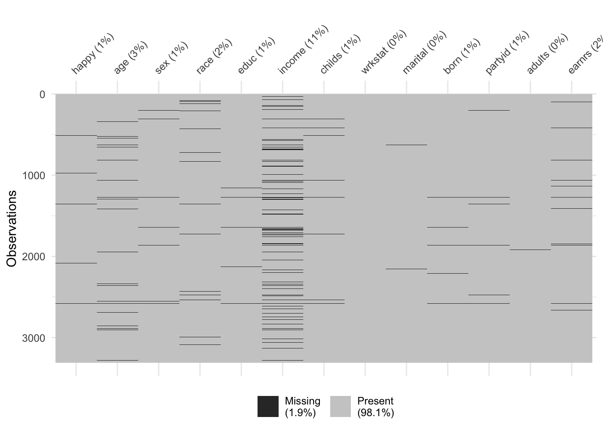
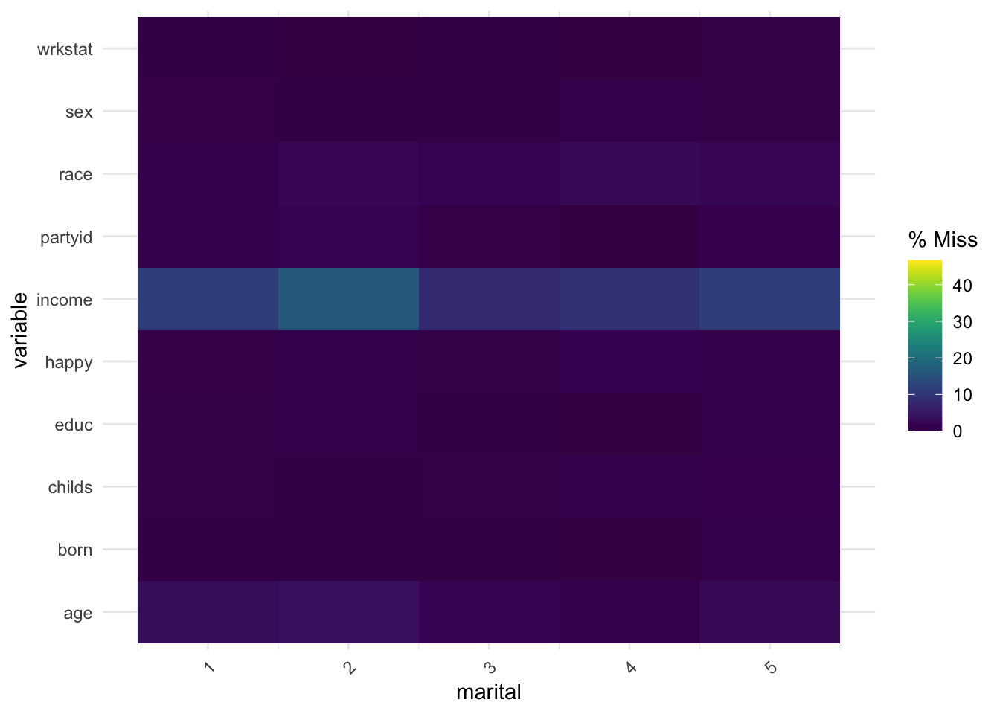
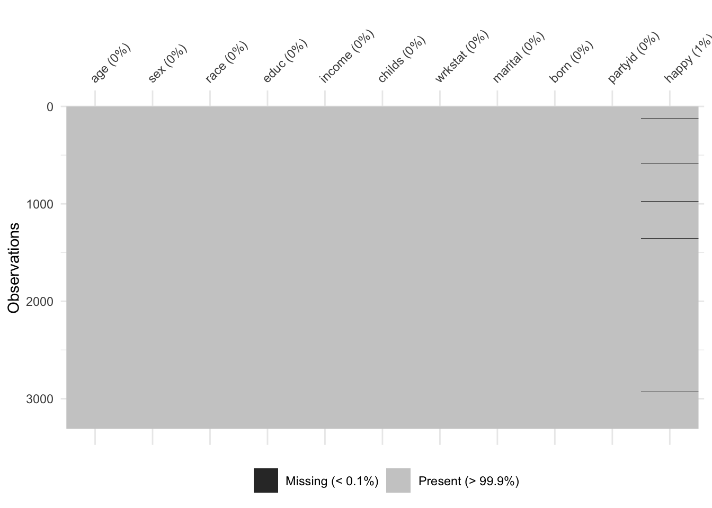
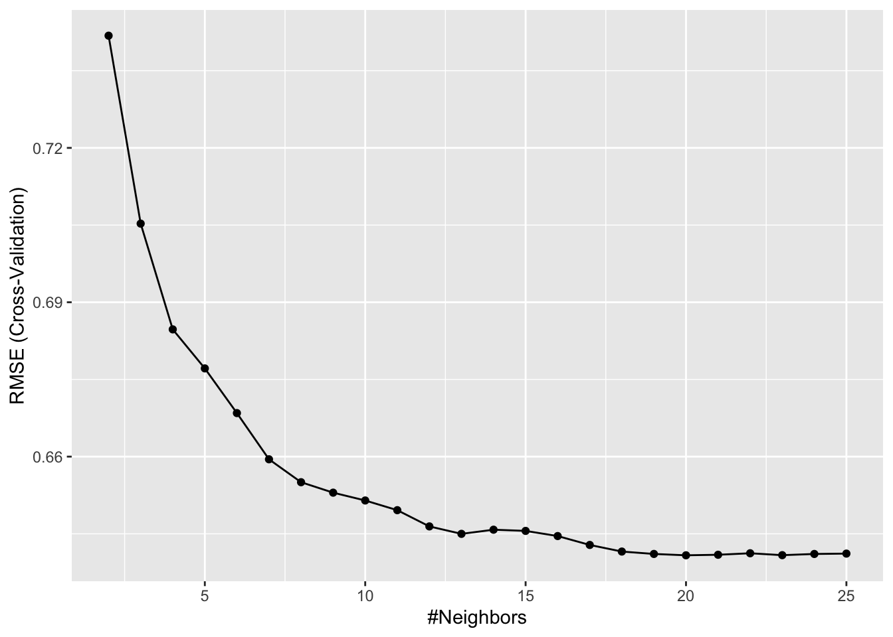

Feature engineering in machine learning typically describes the process of creating, transforming, or selecting variables (features) from raw data to improve a model’s performance.
For example, one aspect of feature engineering is feature creation. This often means transforming raw data into meaningful inputs that better capture the underlying patterns the model needs to learn. For example, suppose we are trying to predict medicine adherence (whether or not someone takes their medicine). Our raw data may contain timestamps of when someone actually takes their medicine. We might use this timestamp to create new features for our model. For example, we might add features representing day of the week, holiday or weekend to provide additional context to the model.
A number of domains fall under feature engineering:
Missing data handling
Feature creation
Feature transformations
Screening or feature selection
Dimension reduction
Feature Engineering and Data Leakage
Data leakage occurs when information from outside the training data set is used to create the model.
Data leakage often occurs during feature engineering.
To minimize data leaking, we will often want to do our feature engineering during the resampling, or data splitting, procedure we are using. To visualize this take a look at the graphic below from Boehmke and Greenwell (2019) where the pre-processing, or data engineering tasks, occur during each iteration. Keep this in mind as we introduce each feature engineering task.
GSS is a long-running, nationally representative survey of adults in the United States that has been conducted almost every two years since 1972 by the National Opinion Research Center (NORC) at the University of Chicago. The GSS data is often used to measure American’s attitudes, behaviors, and beliefs on a wide range of topics—such as politics, religion, crime, race relations, family, work, and technology.
There are two ways to access the GSS data. One is using the GSS Data Explorer. Another option is using the gssr(Healy 2023) R package. Here we will use the gssr(Healy 2023) package to download some example data.
We will start by choosing happy as our target variable. This comes from Question 157 of the 2024 GSS where respondents were asked:
Taken all together, how would you say things are these days - would you say that you are very happy, pretty happy, or not too happy?
Responses were coded such that 1 indicates “very happy”, 2 indicates “pretty happy”, and 3 indicates “not too happy”, while NA indicates “don’t know.”
We can also identify ad bunch of features we think predict self-reported happiness and save our final dataset.
library(gssr)
Package loaded. To attach the GSS data, type data(gss_all) at the console.
For the panel data and documentation, type e.g. data(gss_panel08_long) and data(gss_panel_doc).
For help on a specific GSS variable, type ?varname at the console.
target <-"happy"features <-c("age", # age of participant"sex", # sex of participant"race", # race of participant"educ", # highest education completed by participant"income", # income of participant"childs", # number of children participant has"wrkstat", # work force status"marital", # marital status"born", # whether or not participant was born in USA"partyid", # political party of participant"adults", # num of fam members 18 or older"earnrs"# number of earners in family )data <- gss24[,c(target, features)]table(data$happy, useNA ="always")
1 2 3 <NA>
684 1892 705 28
Next, let’s clean up data a bit, discarding some of the labels and missing value information we don’t need. The data in gss24 retains the labeling structure provided by the GSS. Variables are stored numerically with labels attached to them. Often, when using the data in R, it will be convenient to convert the categorical variables we are interested in to character or factor type instead.
Here we can use code from the gssr package introduction to simplify this recoding. The only thing we need to do is define the categorical variables in our data.
library(dplyr)
Attaching package: 'dplyr'
The following objects are masked from 'package:stats':
filter, lag
The following objects are masked from 'package:base':
intersect, setdiff, setequal, union
cat_vars <-c("sex","race", "educ", "wrkstat", "marital", "born", "partyid")capwords <-function(x, strict =FALSE) { cap <-function(x) paste(toupper(substring(x, 1, 1)), {x <-substring(x, 2); if(strict) tolower(x) else x},sep ="", collapse =" " )sapply(strsplit(x, split =" "), cap, USE.NAMES =!is.null(names(x)))}data <- data |>mutate(# Convert all missing to NAacross(everything(), haven::zap_missing), # Make all categorical variables factors and relabel nicelyacross(all_of(cat_vars), forcats::as_factor),across(all_of(cat_vars), \(x) forcats::fct_relabel(x, capwords, strict =TRUE)) )
Addressing Missing Data
Dealing with missing data in a consistent manner is one of the most important aspects of feature engineering.
Missing Data Mechanisms
Much attention is paid to the mechanisms producing missing data in the statistics and applied sciences literature.
Knowing how the missing data came about is critical for knowing how to handle it in a subsequent analysis.
Although attention to missing data mechanisms has historically not been a primary focus in the ML literature, this has been changing.
A common framework for understanding missing data mechanisms was described by Rubin (1976). Here we will briefly describe these mechanisms in the context of our current data example.
Missing Completely at Random (MCAR)
In MCAR, the probability of a value being missing is unrelated to the value itself or any other observed or unobserved variable. This is a purely random and unsystematic process.
Imagine a cat opening up your dataset in Excel and walking across the keyboard, randomly deleting different cells.
Definition: Missingness in self-reported happiness, for example, is unrelated to the respondent’s true happiness level or any other variables.
Example: Let’s say there is a glitch in the online GSS survey and for some respondent’s questions are randomly skipped. This means the probability of missingness is purely random, and it does not depend on other variables (e.g. income, age, or happiness levels).
Implication: Dropping these cases (listwise deletion) or using simple imputation will not bias the results, although efficiency is reduced.
Missing at Random (MAR)
In MAR, the probability of a value being missing is systematically related to other observed variables in the dataset, but not to the unobserved value itself.
Definition: Missingness in happiness depends on other observed variables but not directly on happiness itself.
Example: Suppose in the GSS, individuals with higher incomes were less likely to answer the happiness question. Missingness on happiness is explained by income, which is observed. Conditional on income (having income in our model as a predictor), the probability of missingness does not depend how happy one is.
Implication: Methods like multiple imputation (MICE), missForest, or regression-based imputation can use income (and other observed covariates like marital status, education) to predict and impute missing happiness values without bias.
Missing Not at Random (MNAR)
Definition: Missingness in happiness depends on the unobserved happiness score itself.
Example: Respondents who are very unhappy may avoid answering the happiness question because it feels too personal, while those who are extremely happy may skip it because they consider it obvious. Missingness is directly tied to the unreported happiness level.
Implication: Standard imputation methods will be biased. Handling MNAR requires explicitly modeling the missingness mechanism (e.g., selection models, pattern-mixture models)
Handling Missing Data in R
Often a first step in handling missing data involves recoding missing values as NA. Writing bespoke code to handle the different types of missing data one might encounter is tedious and unnecessary.
The naniar(Tierney and Cook 2023) package in R contains many convenience functions for managing missing data in R. Here we demonstrate some of that functionality.
Recoding Values with NA
Now that we have a dataset with missing values we can use naniar to recode these values to NA. In our current data example this is already done, but this code might be useful for other projects where you import data
Once we have recoded our data in a consistent manner we can use visualizations to explore the missing data. The vis_miss() function from naniar is a good starting point for visualizing the amount of missing data in our dataset. The plots shows the missing values in black and non-missing values in gray. In addition, percentages of missing data in both the dataset and individual variables are provided.
naniar::vis_miss(data)

It is often useful to look at combinations of missingness among different variables.
naniar::gg_miss_upset(data)

We can also look at the percentage of missing data across a factor variable.
id happiness age income education
1 1 NA 25 50000 Bachelor
2 2 8 NA 55000 Bachelor
3 3 5 30 6500 Master
4 4 NA 40 70000 Master
5 5 6 22 NA HighSchool
6 6 9 35 NA Bachelor
7 7 4 NA NA HighSchool
8 8 7 29 62000 Master
9 9 NA 31 NA Bachelor
10 10 5 28 45000 HighSchool
11 11 6 34 52000 Master
12 12 8 NA NA Master
13 13 7 27 58000 Bachelor
14 14 NA 33 NA HighSchool
15 15 4 26 61000 Bachelor
Handling Missing Data
There are a number of ways to handle missing data. Below I will discuss some of the most common ways of addressing missing data.
Listwise Deletion
Listwise deletion (also called complete-case analysis) is one of the simplest methods for handling missing data in a dataset.
When performing listwise deletion we remove any row that has one or more missing values across any variable used in the analysis.
After deletion, only rows that are complete for all variables remain.
For example, our example GSS data has 3,309 rows before we address the missing data. If we only kept rows that contained no missing data we would have 2,780 observations. You can perform listwise deletion on your data using the complete.cases() function as demonstrated below. Then you can visualize the missing data to ensure there is no missingness on the new dataset.
Now, listwise deletion should really only be used if data is missing completely at random (MCAR). In this case it can still provide unbiased results, although they can be less efficient (reduced power and more uncertainty).
Imputation
Imputation is the process of filling in missing values in a dataset with estimated or predicted values so that you can perform analyses without dropping incomplete cases.
Unlike listwise deletion, imputation retains all observations, reducing data loss. Imputation can be simple (deterministic, like a mean) or more involved (stochastic, model-based).
Estimated Statistic
A simple approach to imputing missing values for a feature is to compute descriptive statistics such as the mean, median, or mode (for categorical) and use that value to replace the NA values.
Although computationally efficient, this approach does not consider any other attributes for a given observation when imputing.
The tidymodels(Kuhn and Wickham 2020) R package has a number of useful functions for machine learning. Here we use the package to perform mean imputation on our dataset.
# create a reciperec <-recipe(happy ~ ., data = data) %>%step_impute_mean(all_numeric_predictors()) %>%step_impute_mode(all_factor_predictors())# apply mean imputation to predictors# prep the recipe (estimates imputation values)rec_prep <-prep(rec)# check the imputed valuesdata_mi <-bake(rec_prep, new_data =NULL)naniar::vis_miss(data_mi)

K-Nearest Neighbor
Another popular method for performing imputation is k-nearest neighbor.
Now, instead of just filling in a missing value with a simple number like the mean, KNN looks for other respondents who are most similar (the “nearest neighbors”) and uses their information to fill in the blank.
How KNN Imputation Works
Measure similarity
For the student with a missing value, KNN looks at the other variables (educ, martial, partyid).
It finds the k students who are most “similar” (closest in the data space).
Borrow information
If we set k = 3, the algorithm finds the 3 most similar students.
Fill in the blank
It might take the average of those 3 scores and use that as the imputed value.
Or, depending on settings, it could pick a weighted average (closer neighbors count more).
Better than Mean Imputation?
Think of guessing someone’s favorite pizza topping:
Mean imputation: “Most people like pepperoni, so I’ll assume this person does too.”
KNN imputation: This person is very similar to Iris, Naomi, Owen, Naveen, and Stella who all like pineapply. Instead, I’ll assume they probably like pineapple.
library(tidymodels)# create a reciperec <-recipe(happy ~ ., data = data) %>%step_impute_knn(all_predictors()) # apply mean imputation to predictors# prep the recipe (estimates imputation values)rec_prep <-prep(rec)# check the imputed valuesdata_knn <-bake(rec_prep, new_data =NULL)naniar::vis_miss(data_knn)
Tree-Based Imputation
Tree-based imputation methods use decision trees (or random forests) to predict missing values based on the other variables in the dataset. Similar to KNN methods, tree-based methods make a tailored prediction using patterns in the data.
Tree-based methods are especially nice for imputation as they handle non-linearities and interactions, and can accomodate mixed data types, like continuous and categorical variables.
How Tree-Based Imputation Works
Treat the missing variable like an outcome
Suppose some people are missing their income.
A tree is trained to predict income from other available variables (like education, age, occupation).
Learn patterns in the data
The tree splits the dataset into groups that have similar income levels.
For example:
If education > 16 years → higher income group
If education ≤ 16 and occupation = retail → lower income group
Predict the missing values
For a person with missing income, the model uses their other information (education, age, etc.) to drop them into the right “leaf” of the tree.
The average (or majority class, if categorical) in that leaf is used as the imputed value.
Better than Mean Imputation?
Think of tree-based imputation like asking:
“Given your age, job, and education, people like you usually make about X — so we’ll use that as your missing value.”
This is smarter than saying “everyone makes the same average income” (mean imputation) or even “let’s just look at your 3 closest neighbors” (KNN).
Feature Filtering
Feature filtering is a feature selection technique in machine learning where features are evaluated prior to the model fitting based on statistical or heuristic criteria. Features are then kept or discarded based on those criteria.
It is called filtering because it is a preprocessing step, part of a feature engineering pipeline, done before we actually train the model.
Typically, the goals of feature filtering are:
Reduce dimensionality: Fewer features means simpler models, faster training, and less risk of overfitting.
Remove irrelevant or redundant features: Avoids feeding the model noisy or useless inputs.
Improve interpretability: Models are easier to understand when they focus only on meaningful features.
Boost performance: Better generalization on new data when unnecessary features are excluded.
In practice, one of the filtering tasks we will typically conduct involves weeding out low variance features.
Removing Low-Variance Features
Zero and near-zero variance variables are low-hanging fruit to eliminate.
Zero Variance Features: variable only contains a single unique value
Near-Zero Variance Features: variable contains only a few unique values
Zero and near-zero variance variables typically offer little to no information for model building. Furthermore, resampling (data-splitting) further complicates this picture because a given fold or sample may only contain a single value if the variable itself only contains a few unique values.
Boehmke and Greenwell (2019) suggest the following rule-of-thumb for removing low-variance features:
Remove a variable if:
The fraction of unique values over the sample size is low (e.g. 10%).
The ratio of the frequency of the most prevalent value to the frequency of the second most prevalent value is large (e.g. ≥20).
We can use the caret(Kuhn and Max 2008) package in R to look at these different metrics for our example data.
Feature engineering on continuous or numeric features involves transforming the raw data to make it more useful for modeling. Common motivations include capturing nonlinear relationships (e.g., log or polynomial transforms), improving distributional properties (reducing skew or outlier impact), and putting features on comparable scales through standardization.
In some cases, continuous variables are binned into categories or combined into interactions to highlight patterns. Overall, these transformations help models detect structure in the data more effectively and improve both performance and interpretability.
Skewness
Parametric models with distributional assumptions (e.g., GLMs, and some regularized models) can benefit from minimizing the skewness of numeric features. One popular transformation is the Yeo-Johnson transformation.
The Yeo-Johnsontransformation is a statistical technique used to stabilize variance and make data more normally distributed, similar to the Box-Cox transformation but more flexible. Unlike Box-Cox, it can handle both positive and negative values, making it useful for real-world data that span zero.
recipe(happy ~ ., data = data) %>%step_YeoJohnson(all_numeric())
We will often want to standardize variables prior to our model fitting to put them on a common scale, typically with mean of zero and a standard deviation of one.
This prevents features with larger numeric ranges (e.g., income in dollars vs. age in years) from dominating distance-based methods (like k-NN, SVMs, or clustering). It can also help with optimization problems, may improve convergence and can help ensure that regularization penalties (like in ridge or lasso regression) are applied fairly across predictors.
data %>%step_center(all_numeric(), -all_outcomes()) %>%step_scale(all_numeric(), -all_outcomes())
Categorical Feature Engineering
Many models require that the predictors take numeric form. There are exceptionssuch as tree-based models, however, even tree-based methods can benefit from preprocessing categorical features. The following sections will discuss a few of the more common approaches to engineer categorical features.
Lumping
Sometimes features will contain levels that have very few observations. For example, take a look at the work status variable wrkstat. There are 8 unique levels and some have relatively few observations. For example, With A Job, But Not At Work Because Of Temporary Illness, Vacation, Strike.
count(data, wrkstat) %>%arrange(n)
# A tibble: 9 × 2
wrkstat n
<fct> <int>
1 <NA> 10
2 With A Job, But Not At Work Because Of Temporary Illness, Vacation, Str… 61
3 In School 90
4 Other 113
5 Unemployed, Laid Off, Looking For Work 168
6 Keeping House 292
7 Working Part Time 319
8 Retired 796
9 Working Full Time 1460
Sometimes we can benefit from collapsing, or “lumping” these into a lesser number of categories. In the above examples, we may want to collapse all levels that are observed in less than 5% of the training sample into an Other category. We can use step_other() to do so.
lumping <-recipe(happy ~ ., data = data) %>%step_other(wrkstat, threshold =0.05, other ="Other")# Apply this blue print --> you will learn about this at # the end of the chapterapply_2_training <-prep(lumping, training = data) %>%bake(data)# New distribution of Neighborhoodcount(apply_2_training, wrkstat) %>%arrange(n)
# A tibble: 7 × 2
wrkstat n
<fct> <int>
1 <NA> 10
2 Unemployed, Laid Off, Looking For Work 168
3 Other 264
4 Keeping House 292
5 Working Part Time 319
6 Retired 796
7 Working Full Time 1460
One-Hot and Dummy Encoding
As mentioned previously many models require that all features be numeric. Consequently, we need to intelligently transform any categorical variables into numeric representations so that these algorithms will work.
There are many ways to recode categorical variables as numeric (e.g., one-hot, ordinal, binary, sum, and Helmert).
One-hot encoding is a common method for converting categorical variables into a numerical format that machine learning algorithms can work with. Instead of assigning arbitrary numbers to categories (which could incorrectly imply an order), one-hot encoding creates a new binary (0/1) column for each category level. For a given observation, the column corresponding to its category is set to 1, and all others are set to 0.
However, this creates perfect collinearity which causes problems with some predictive modeling algorithms (e.g., ordinary linear regression and neural networks). Alternatively, we can create a full-rank encoding by dropping one of the levels (level blue has been dropped). This is referred to as dummy coding.
target <-"happy"features <-c("age", # age of participant"sex", # sex of participant"race", # race of participant"educ", # highest education completed by participant"income", # income of participant"childs", # number of children participant has"wrkstat", # work force status"marital", # marital status"born", # whether or not participant was born in USA"partyid", # political party of participant"adults", # num of fam members 18 or older"earnrs"# number of earners in family )data <- gss24[,c(target, features)]# define which varibles are categorical and continuouscat_vars <-c("sex","race", "educ", "wrkstat", "marital", "born", "partyid")con_vars <-c("age","income","childs","adults","earnrs","happy")capwords <-function(x, strict =FALSE) { cap <-function(x) paste(toupper(substring(x, 1, 1)), {x <-substring(x, 2); if(strict) tolower(x) else x},sep ="", collapse =" " )sapply(strsplit(x, split =" "), cap, USE.NAMES =!is.null(names(x)))}data <- data |>mutate(# Convert all missing to NAacross(everything(), haven::zap_missing), # Make all categorical variables factors and relabel nicelyacross(all_of(cat_vars), forcats::as_factor),across(all_of(con_vars), as.numeric),across(all_of(cat_vars), \(x) forcats::fct_relabel(x, capwords, strict =TRUE)) )data <- data[!is.na(data$happy),]
We can now separate our data into a training and test set.
# install.packages("rsample")library(rsample)# Stratified sampling with the rsample packageset.seed(123)split <-initial_split(data, prop =0.7, strata ="happy")data_train <-training(split)data_test <-testing(split)
Now, we will formally introduce the recipes package.
The recipes package is part of the tidymodels framework and is designed for feature engineering. In machine learning, raw data usually isn’t ready to be used directly in a model—you might need to do all the things we discussed in these notes.
Instead of doing all these steps manually, recipes lets us define a sequence of preprocessing steps (called a recipe) that can be applied consistently to training and test data.
A recipe typically goes through three main stages:
1. Define the recipe
Write down the blueprint of preprocessing steps you want to apply.
• Sparse, unbalanced variable filter on: all_nominal()
• Bagged tree imputation for: all_predictors()
• Dummy variables from: all_factor_predictors()
• Centering for: all_numeric() -all_outcomes()
• Scaling for: all_numeric() -all_outcomes()
# these are example steps you don't need to run for any reason other# than troubleshooting# prepare <- prep(blueprint, training = data_train)# prepare# baked_train <- bake(prepare, new_data = data_train)# baked_test <- bake(prepare, new_data = data_test)# baked_train
Next, we can fit a model using the caret pacakge, using our blueprint as the first argument and then caret takes care of the rest.
library(caret)
Loading required package: lattice
Attaching package: 'caret'
The following objects are masked from 'package:yardstick':
precision, recall, sensitivity, specificity
The following object is masked from 'package:rsample':
calibration
The following object is masked from 'package:purrr':
lift
# Specify cross-validation plancv <-trainControl(method ="cv", # k-folds cross-validation", number =10# 10 folds)# Create grid of hyperparameter valueshyper_grid <-expand.grid(k =seq(2, 25, by =1))# Tune a knn model using grid searchknn_fit <-train( blueprint, data = data_train, method ="knn", trControl = cv, tuneGrid = hyper_grid,metric ="RMSE")
Warning: ! The following column has zero variance so scaling cannot be used:
educ_X4th.Grade.
ℹ Consider using ?step_zv (`?recipes::step_zv()`) to remove those columns
before normalizing.
! The following column has zero variance so scaling cannot be used:
educ_X4th.Grade.
ℹ Consider using ?step_zv (`?recipes::step_zv()`) to remove those columns
before normalizing.
! The following column has zero variance so scaling cannot be used:
educ_X4th.Grade.
ℹ Consider using ?step_zv (`?recipes::step_zv()`) to remove those columns
before normalizing.
! The following column has zero variance so scaling cannot be used:
educ_X4th.Grade.
ℹ Consider using ?step_zv (`?recipes::step_zv()`) to remove those columns
before normalizing.
! The following column has zero variance so scaling cannot be used:
educ_X4th.Grade.
ℹ Consider using ?step_zv (`?recipes::step_zv()`) to remove those columns
before normalizing.
! The following column has zero variance so scaling cannot be used:
educ_X4th.Grade.
ℹ Consider using ?step_zv (`?recipes::step_zv()`) to remove those columns
before normalizing.
! The following column has zero variance so scaling cannot be used:
educ_X4th.Grade.
ℹ Consider using ?step_zv (`?recipes::step_zv()`) to remove those columns
before normalizing.
! The following column has zero variance so scaling cannot be used:
educ_X4th.Grade.
ℹ Consider using ?step_zv (`?recipes::step_zv()`) to remove those columns
before normalizing.
! The following column has zero variance so scaling cannot be used:
educ_X4th.Grade.
ℹ Consider using ?step_zv (`?recipes::step_zv()`) to remove those columns
before normalizing.
! The following column has zero variance so scaling cannot be used:
educ_X4th.Grade.
ℹ Consider using ?step_zv (`?recipes::step_zv()`) to remove those columns
before normalizing.
! The following column has zero variance so scaling cannot be used:
educ_X4th.Grade.
ℹ Consider using ?step_zv (`?recipes::step_zv()`) to remove those columns
before normalizing.
! The following column has zero variance so scaling cannot be used:
educ_X4th.Grade.
ℹ Consider using ?step_zv (`?recipes::step_zv()`) to remove those columns
before normalizing.
! The following column has zero variance so scaling cannot be used:
educ_X4th.Grade.
ℹ Consider using ?step_zv (`?recipes::step_zv()`) to remove those columns
before normalizing.
! The following column has zero variance so scaling cannot be used:
educ_X4th.Grade.
ℹ Consider using ?step_zv (`?recipes::step_zv()`) to remove those columns
before normalizing.
! The following column has zero variance so scaling cannot be used:
educ_X4th.Grade.
ℹ Consider using ?step_zv (`?recipes::step_zv()`) to remove those columns
before normalizing.
! The following column has zero variance so scaling cannot be used:
educ_X4th.Grade.
ℹ Consider using ?step_zv (`?recipes::step_zv()`) to remove those columns
before normalizing.
! The following column has zero variance so scaling cannot be used:
educ_X4th.Grade.
ℹ Consider using ?step_zv (`?recipes::step_zv()`) to remove those columns
before normalizing.
! The following column has zero variance so scaling cannot be used:
educ_X4th.Grade.
ℹ Consider using ?step_zv (`?recipes::step_zv()`) to remove those columns
before normalizing.
! The following column has zero variance so scaling cannot be used:
educ_X4th.Grade.
ℹ Consider using ?step_zv (`?recipes::step_zv()`) to remove those columns
before normalizing.
! The following column has zero variance so scaling cannot be used:
educ_X4th.Grade.
ℹ Consider using ?step_zv (`?recipes::step_zv()`) to remove those columns
before normalizing.
! The following column has zero variance so scaling cannot be used:
educ_X4th.Grade.
ℹ Consider using ?step_zv (`?recipes::step_zv()`) to remove those columns
before normalizing.
! The following column has zero variance so scaling cannot be used:
educ_X4th.Grade.
ℹ Consider using ?step_zv (`?recipes::step_zv()`) to remove those columns
before normalizing.
! The following column has zero variance so scaling cannot be used:
educ_X4th.Grade.
ℹ Consider using ?step_zv (`?recipes::step_zv()`) to remove those columns
before normalizing.
! The following column has zero variance so scaling cannot be used:
educ_X4th.Grade.
ℹ Consider using ?step_zv (`?recipes::step_zv()`) to remove those columns
before normalizing.
Warning: ! The following column has zero variance so scaling cannot be used:
educ_X1st.Grade.
ℹ Consider using ?step_zv (`?recipes::step_zv()`) to remove those columns
before normalizing.
! The following column has zero variance so scaling cannot be used:
educ_X1st.Grade.
ℹ Consider using ?step_zv (`?recipes::step_zv()`) to remove those columns
before normalizing.
! The following column has zero variance so scaling cannot be used:
educ_X1st.Grade.
ℹ Consider using ?step_zv (`?recipes::step_zv()`) to remove those columns
before normalizing.
! The following column has zero variance so scaling cannot be used:
educ_X1st.Grade.
ℹ Consider using ?step_zv (`?recipes::step_zv()`) to remove those columns
before normalizing.
! The following column has zero variance so scaling cannot be used:
educ_X1st.Grade.
ℹ Consider using ?step_zv (`?recipes::step_zv()`) to remove those columns
before normalizing.
! The following column has zero variance so scaling cannot be used:
educ_X1st.Grade.
ℹ Consider using ?step_zv (`?recipes::step_zv()`) to remove those columns
before normalizing.
! The following column has zero variance so scaling cannot be used:
educ_X1st.Grade.
ℹ Consider using ?step_zv (`?recipes::step_zv()`) to remove those columns
before normalizing.
! The following column has zero variance so scaling cannot be used:
educ_X1st.Grade.
ℹ Consider using ?step_zv (`?recipes::step_zv()`) to remove those columns
before normalizing.
! The following column has zero variance so scaling cannot be used:
educ_X1st.Grade.
ℹ Consider using ?step_zv (`?recipes::step_zv()`) to remove those columns
before normalizing.
! The following column has zero variance so scaling cannot be used:
educ_X1st.Grade.
ℹ Consider using ?step_zv (`?recipes::step_zv()`) to remove those columns
before normalizing.
! The following column has zero variance so scaling cannot be used:
educ_X1st.Grade.
ℹ Consider using ?step_zv (`?recipes::step_zv()`) to remove those columns
before normalizing.
! The following column has zero variance so scaling cannot be used:
educ_X1st.Grade.
ℹ Consider using ?step_zv (`?recipes::step_zv()`) to remove those columns
before normalizing.
! The following column has zero variance so scaling cannot be used:
educ_X1st.Grade.
ℹ Consider using ?step_zv (`?recipes::step_zv()`) to remove those columns
before normalizing.
! The following column has zero variance so scaling cannot be used:
educ_X1st.Grade.
ℹ Consider using ?step_zv (`?recipes::step_zv()`) to remove those columns
before normalizing.
! The following column has zero variance so scaling cannot be used:
educ_X1st.Grade.
ℹ Consider using ?step_zv (`?recipes::step_zv()`) to remove those columns
before normalizing.
! The following column has zero variance so scaling cannot be used:
educ_X1st.Grade.
ℹ Consider using ?step_zv (`?recipes::step_zv()`) to remove those columns
before normalizing.
! The following column has zero variance so scaling cannot be used:
educ_X1st.Grade.
ℹ Consider using ?step_zv (`?recipes::step_zv()`) to remove those columns
before normalizing.
! The following column has zero variance so scaling cannot be used:
educ_X1st.Grade.
ℹ Consider using ?step_zv (`?recipes::step_zv()`) to remove those columns
before normalizing.
! The following column has zero variance so scaling cannot be used:
educ_X1st.Grade.
ℹ Consider using ?step_zv (`?recipes::step_zv()`) to remove those columns
before normalizing.
! The following column has zero variance so scaling cannot be used:
educ_X1st.Grade.
ℹ Consider using ?step_zv (`?recipes::step_zv()`) to remove those columns
before normalizing.
! The following column has zero variance so scaling cannot be used:
educ_X1st.Grade.
ℹ Consider using ?step_zv (`?recipes::step_zv()`) to remove those columns
before normalizing.
! The following column has zero variance so scaling cannot be used:
educ_X1st.Grade.
ℹ Consider using ?step_zv (`?recipes::step_zv()`) to remove those columns
before normalizing.
! The following column has zero variance so scaling cannot be used:
educ_X1st.Grade.
ℹ Consider using ?step_zv (`?recipes::step_zv()`) to remove those columns
before normalizing.
! The following column has zero variance so scaling cannot be used:
educ_X1st.Grade.
ℹ Consider using ?step_zv (`?recipes::step_zv()`) to remove those columns
before normalizing.
knn_fit
k-Nearest Neighbors
2295 samples
12 predictor
Recipe steps: nzv, impute_bag, dummy, center, scale
Resampling: Cross-Validated (10 fold)
Summary of sample sizes: 2066, 2066, 2066, 2064, 2066, 2065, ...
Resampling results across tuning parameters:
k RMSE Rsquared MAE
2 0.7418063 0.03097989 0.5719579
3 0.7052823 0.03088297 0.5546278
4 0.6847273 0.03149323 0.5390046
5 0.6771450 0.02897065 0.5329401
6 0.6684619 0.03192580 0.5233915
7 0.6594812 0.03810636 0.5159846
8 0.6550279 0.03945877 0.5112249
9 0.6529972 0.03903932 0.5081061
10 0.6514761 0.03798039 0.5039809
11 0.6495920 0.03878046 0.5006377
12 0.6464377 0.04135895 0.4983083
13 0.6449913 0.04153260 0.4959262
14 0.6457968 0.03833580 0.4952235
15 0.6455656 0.03708429 0.4940333
16 0.6445642 0.03761307 0.4920747
17 0.6428354 0.03999850 0.4895426
18 0.6415509 0.04156203 0.4877497
19 0.6410869 0.04199466 0.4861644
20 0.6408229 0.04204207 0.4847307
21 0.6409284 0.04098073 0.4844582
22 0.6412205 0.04035344 0.4837011
23 0.6408491 0.04051976 0.4822852
24 0.6410824 0.03919338 0.4819184
25 0.6411540 0.03858298 0.4816823
RMSE was used to select the optimal model using the smallest value.
The final value used for the model was k = 20.
ggplot(knn_fit)

References
Boehmke, Brad, and Brandon M Greenwell. 2019. Hands-on Machine Learning with r. Chapman; Hall/CRC.
Kuhn, Max, and Hadley Wickham. 2020. Tidymodels: A Collection of Packages for Modeling and Machine Learning Using Tidyverse Principles.https://www.tidymodels.org.
Kuhn, and Max. 2008. “Building Predictive Models in r Using the Caret Package.”Journal of Statistical Software 28 (5): 1–26. https://doi.org/10.18637/jss.v028.i05.
Rubin, Donald B. 1976. “Inference and Missing Data.”Biometrika 63 (3): 581–92.
Tierney, Nicholas, and Dianne Cook. 2023. “Expanding Tidy Data Principles to Facilitate Missing Data Exploration, Visualization and Assessment of Imputations.”Journal of Statistical Software 105 (7): 1–31. https://doi.org/10.18637/jss.v105.i07.